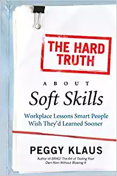
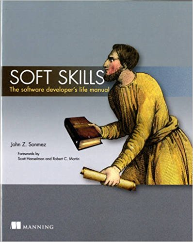
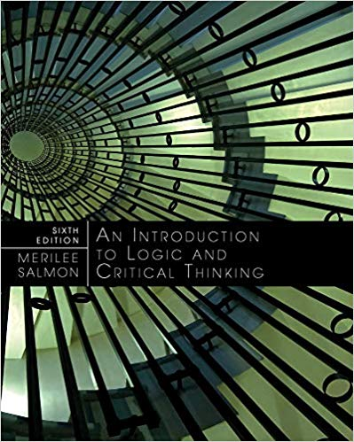

STS 3011 - Preparedness for External Opportunities
Reference Book
| The Hard Truth About Soft Skills: Workplace Lessons Smart People Wish They'd Learned Sooner |
| Author: |
Peggy Klaus |
 |
| Publisher: |
HarperBusiness |
| Edition: |
1st edition |
| E-Book: |
Download E-Book |
| Soft Skills: The software developer's life manual |
| Author: |
John Sonmez |
 |
| Publisher: |
Manning Publications |
| Edition: |
1st edition |
| E-Book: |
Download E-Book |
| Introduction to Logic and Critical Thinking |
| Author: |
Merrilee H. Salmon |
 |
| Publisher: |
Cengage Learning |
| Edition: |
6th edition |
| E-Book: |
Download E-Book |